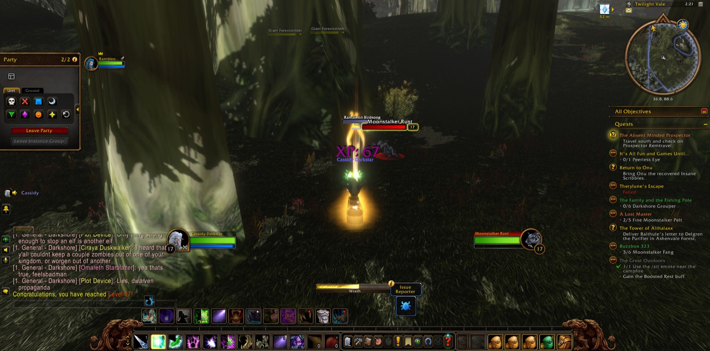
Cassidy Darkstar set out from the Twilight Vale and came first to the Grove of the Ancients, where he saw Onu's errand ended and took up another: the matter of the Master's Glaive. Yet the road bent north before it bent south. In Ameth'Aran a company gathered about him. Björn the warrior was there, with Cilantro and Nether the priests and Summerteeth the hunter, and others who came and went swiftly, Paris, Yucca, Adoria, Soko and Loewe. Among them he destroyed the seal at the ancient flame, won back Anaya's Pendant, and took the feather of Jai'vhanel. These things he carried to Auberdine, and there three errands were laid down together.
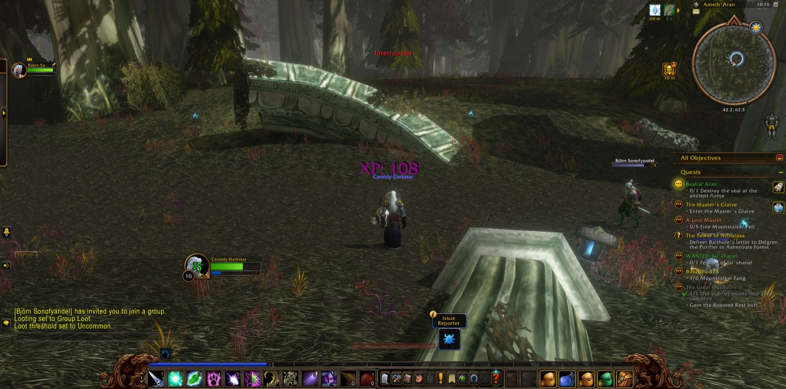
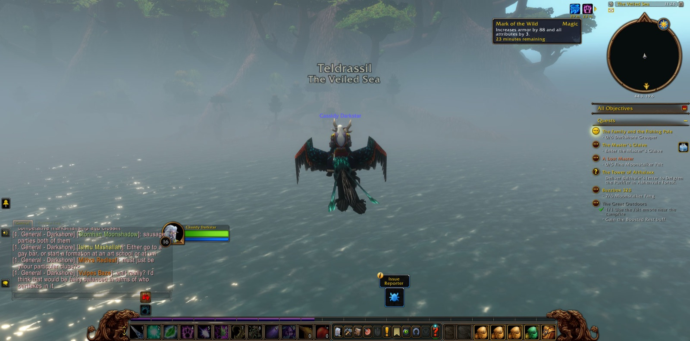
Then he crossed the Veiled Sea to Rut'theran Village, walked the terraces of Darnassus and the Pools of Arlithrien, and came back again to Darkshore. At Bashal'Aran he first fell in with Rambleon the hunter, who was to be his companion, now near and now apart, over the greater part of the road that followed. Beside Cliffspring River the Den Mother was slain for Tharnariun's Hope. A Talisman of Corruption was taken from the Blackwood, and Xabraxxis was overcome, while Tina, Cassian, Aiko, Mad and Silver shared the labour for a little while. At the Master's Glaive he went against the Twilight Disciples and their thugs. He fell there once, and rose, and saw the errand through, and the Twilight Camp besides, with Papa beside him. In the Twilight Vale the Moonstalker Matriarch was slain, and Cassidy came into new strength.
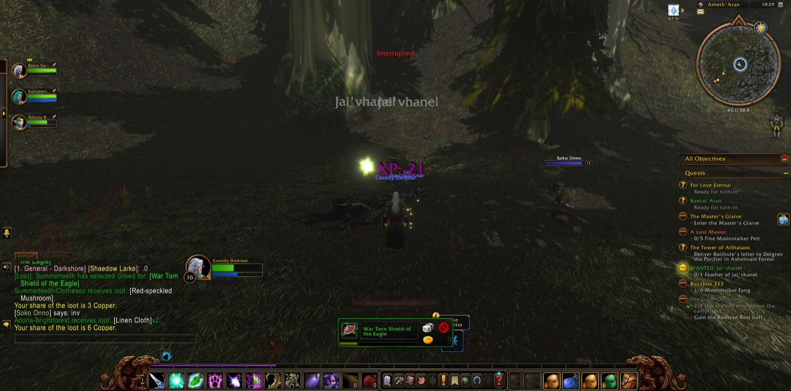
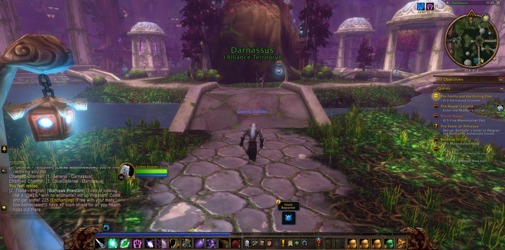
Beyond the Vale lay Ashenvale, and ground he had not trodden. From Maestra's Post he followed the long errand of the Tower of Althalaxx. He won a Glowing Soul Gem in the Ruins of Ordil'Aran, and at Fire Scar Shrine he took the tome of Ilkrud Magthrull. Karis the druid joined him by the Shrine of Aessina and went with him as far as Darkshore again. On the Zoram Strand twenty Wrathtail heads were gathered, and at Astranaar Cassidy grew stronger once more. For Raene's Cleansing he found a Glowing Gem at Lake Falathim and bore it at length to the Moonwell. Twice more he went up to Darnassus. At Auberdine he took up new errands, and in the Grove of the Ancients he brought Onu the Insane Scribbles out of the Master's Glaive.
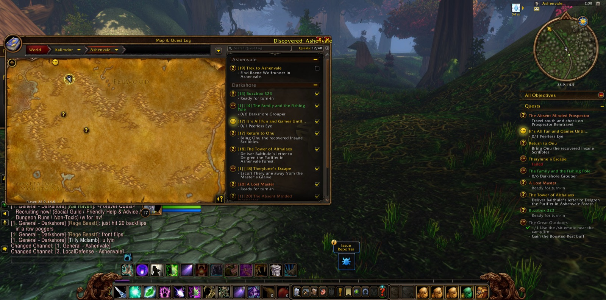
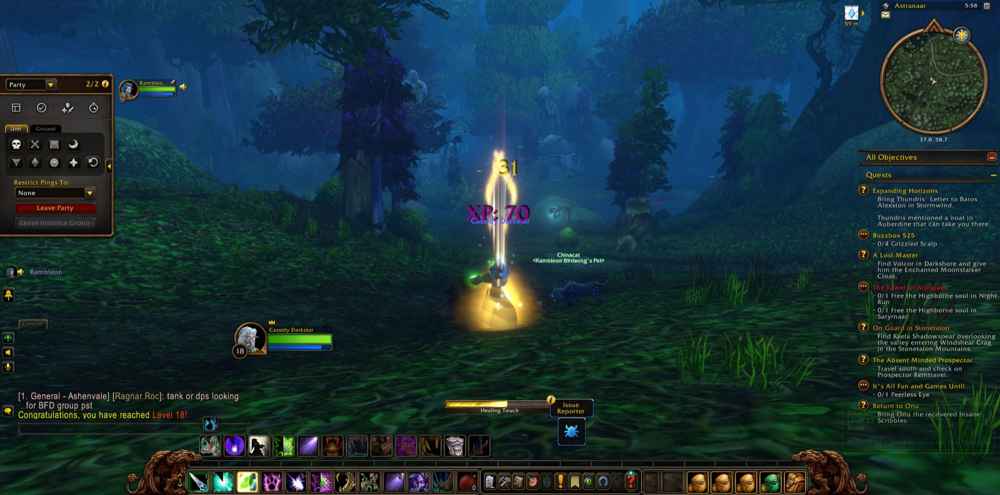
Then he turned south, through Raynewood Retreat and Nightsong Woods to the Mor'shan Rampart, where Chud the hunter kept him company for a little way. He went down the Gold Road into the Barrens, past Honor's Stand, and so into the Stonetalon Mountains. On Webwinder Path the charge given him in Astranaar was fulfilled. At Windshear Crag ten loggers and ten deforesters of the Venture Company were put down for A Gnome's Respite. Last of all, at Mirkfallon Lake, among the Pridewing wyverns and their consorts, he gathered twelve venom sacs, with Kancho the warrior at his side. There Rambleon parted from him, and there Cassidy took many pictures. The road from Stonetalon ran on before him, and he was ready to walk it.
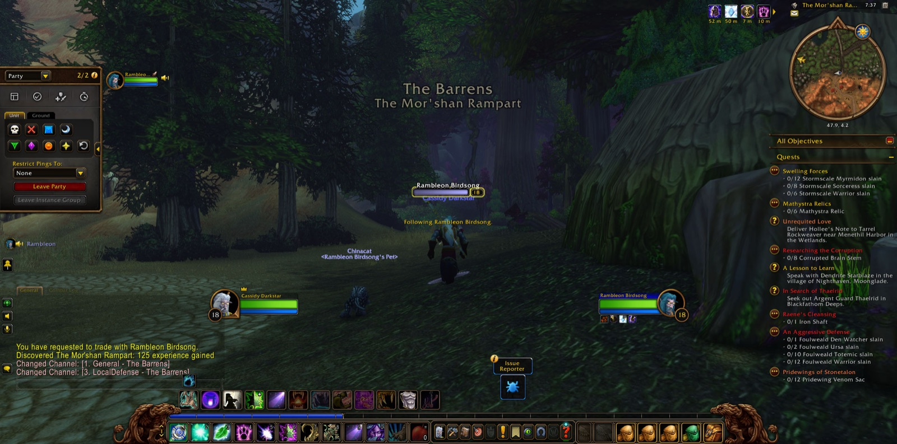
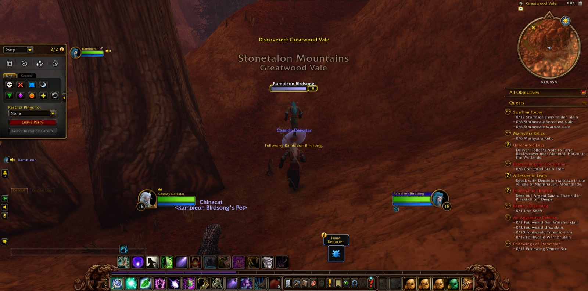
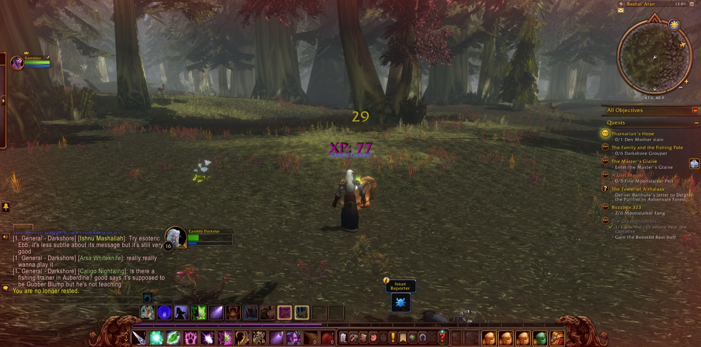
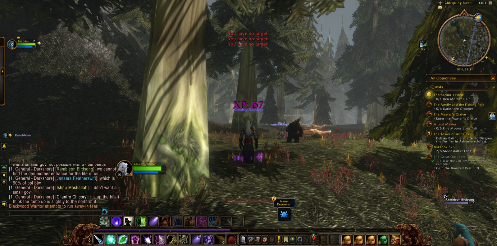
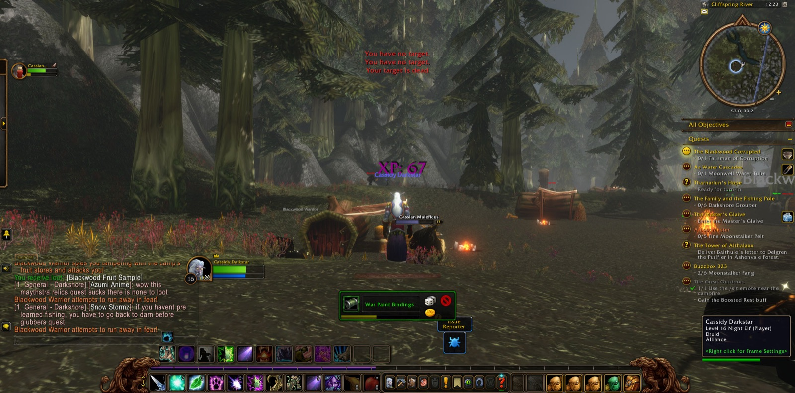
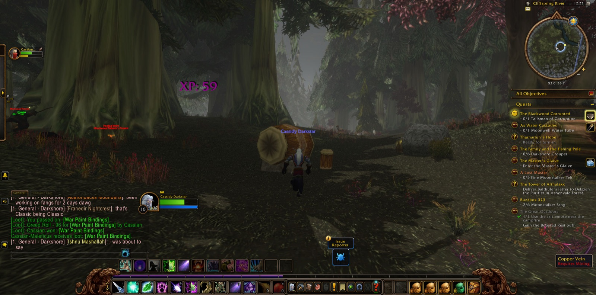
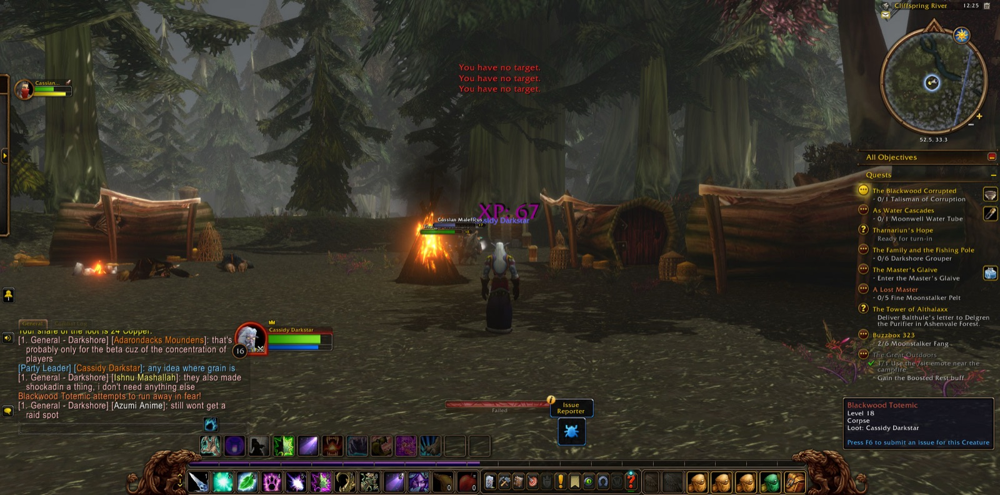
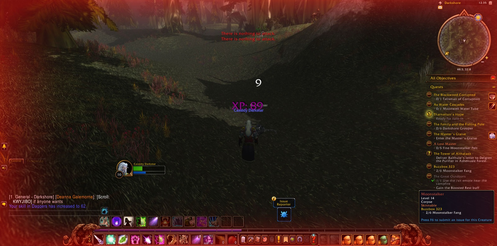